SBC for ADVI and optimizing in Stan (+HMMs)
Hyunji Moon, Martin Modrák
2023-01-05
Source:vignettes/computational_algorithm1.Rmd
computational_algorithm1.RmdSummary
Computational algorithms such as variational inference (VI) can fail due to the inability of the approximation family to capture the true posterior, under/over penalizing tendencies of convergence metric, and slow convergence of the optimization process. We’ll discuss 3 examples:
In Example I a simple Poisson model is shown that is well handled by default ADVI if the size of the data is small, but becomes miscalibrated when larger amount of observations is available. It also turns out that for such a simple model using
optimizingleads to very good results.In Example II we discuss a Hidden Markov Model where the approximation by ADVI is imperfect but not very wrong. We also show how the (mis)calibration responds to changing parameters of the ADVI implementation and that
optimizingperforms worse than ADVI.In Example III we show that a small modification to the model from Example II makes the ADVI approximation perform much worse.
When the fit between posterior and approximation family, convergence metric and its process are checked so that efficiency is gained without sacrificing accuracy too much, VI can be applied. On top of its role as “the test” computational algorithms should pass, SBC provides informative inferential results which directly affect workflow decisions.
Introduction
HMC can be slow and depending on the joint posterior (as a combination of data, prior, and likelihood) and the user’s goal, deterministic approximation algorithms can be an aid. To be specific, if the joint posterior is well-formed enough for reliable approximation (symmetric for ADVI which has normal approximation family) or the user only needs point estimate (i.e. specification up to distribution-level is not needed) users can consider the deterministic alternatives for their inference tool such as ADVI supported by Stan. Note that Pathfinder (Zhang, 2021) which blends deterministic algorithm’s efficiency and stochastic algorithm’s accuracy in a timely manner is under development. SBC provides one standard to test whether ADVI works well for your model without ever needing to run full HMC for your model.
Let’s start by setting up our environment.
library(SBC)
library(ggplot2)
library(cmdstanr)
library(rstan)
rstan_options(auto_write = TRUE)
options(mc.cores = parallel::detectCores())
# Parallel processing
library(future)
plan(multisession)
# The fits are very fast,
# so we force a minimum chunk size to reduce the overhead of
# paralellization and decrease computation time.
options(SBC.min_chunk_size = 5)
# Setup caching of results
cache_dir <- "./_approximate_computation_SBC_cache"
if(!dir.exists(cache_dir)) {
dir.create(cache_dir)
}Example I - Poisson
We’ll start by the extremely simple Poisson model already introduced in the basic usage vignette:
data{
int N;
int y[N];
}
parameters{
real<lower = 0> lambda;
}
model{
lambda ~ gamma(15, 5);
y ~ poisson(lambda);
}And here’s R code that generates data matching that model:
poisson_generator_single <- function(N){
# N is the number of data points we are generating
lambda <- rgamma(n = 1, shape = 15, rate = 5)
y <- rpois(n = N, lambda = lambda)
list(
variables = list(
lambda = lambda
),
generated = list(
N = N,
y = y
)
)
}We’ll start with Stan’s ADVI with all default parameters, i.e. a mean-field variational approximation. We compile the model and create a variational SBC backend.
model_poisson <- cmdstan_model("stan/poisson.stan")
backend_poisson <- SBC_backend_cmdstan_variational(model_poisson, n_retries_init = 3)Note that we allow the backend to retry initialization several times
(n_retries_init), as the ADVI implementation in Stan can
sometimes fail to start properly on the first try even for very simple
models. This ability to retry is an extension in the SBC package and not
implemented in Stan.
Throughout the vignette, we’ll also use caching for the results.
Since the model runs quickly and is simple, we start with 1000 simulations.
set.seed(46522641)
ds_poisson <- generate_datasets(
SBC_generator_function(poisson_generator_single, N = 20),
n_sims = 1000)
res_poisson <-
compute_SBC(
ds_poisson, backend_poisson, keep_fits = FALSE,
cache_mode = "results", cache_location = file.path(cache_dir, "poisson"))## Results loaded from cache file 'poisson'Even with the quite high precision afforded by 1000 simulations, the ECDF diff plot and the ranks show no problems - the model is quite well calibrated, although the wavy shape of the ECDF suggest a minor overconfidence of the approximation:
plot_ecdf_diff(res_poisson)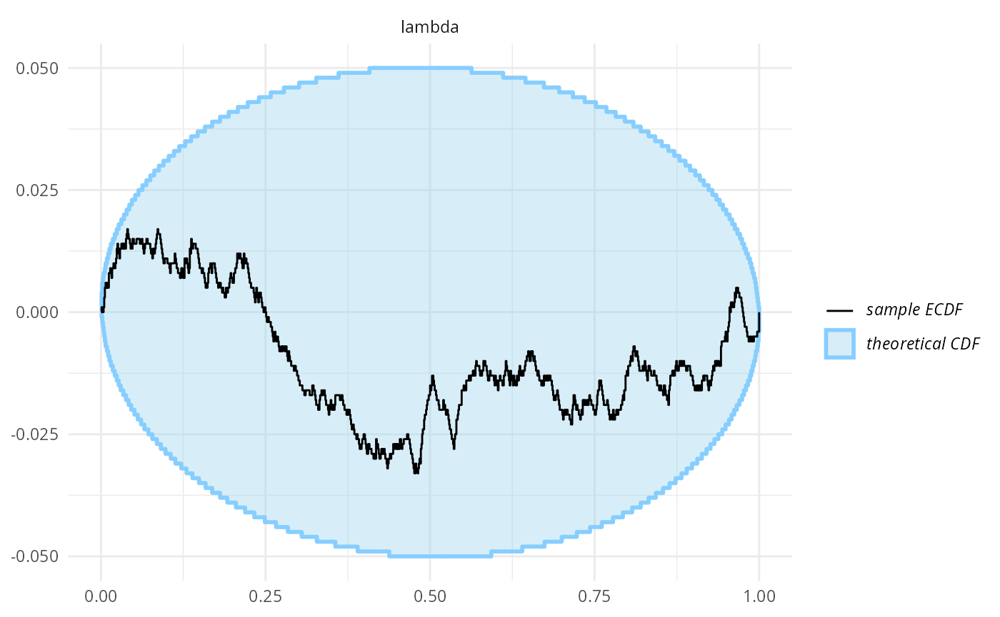
plot_rank_hist(res_poisson)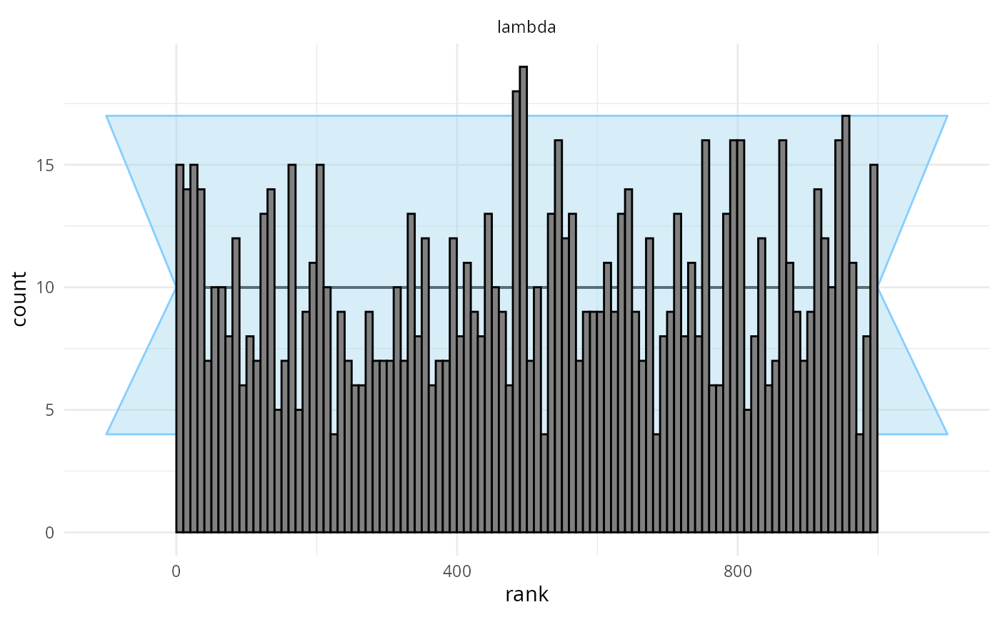
To put this in different terms we can look at the observed coverage of central 50%, 80% and 95% intervals. We see that the observed coverage for 50% and 80% intervals is a bit lower than expected.
empirical_coverage(res_poisson$stats,width = c(0.95, 0.8, 0.5))## # A tibble: 3 × 6
## variable width width_represented ci_low estimate ci_high
## <chr> <dbl> <dbl> <dbl> <dbl> <dbl>
## 1 lambda 0.5 0.5 0.418 0.449 0.480
## 2 lambda 0.8 0.8 0.752 0.779 0.804
## 3 lambda 0.95 0.95 0.932 0.948 0.960Is more data better?
One would expect that the normal approximation implemented in ADVI
becomes better with increased size of the data, this is however not
necessarily true - let’s run the same model, but increase N
- the number of observed data points:
set.seed(23546224)
ds_poisson_100 <- generate_datasets(
SBC_generator_function(poisson_generator_single, N = 100),
n_sims = 1000)
res_poisson_100 <-
compute_SBC(ds_poisson_100, backend_poisson, keep_fits = FALSE,
cache_mode = "results", cache_location = file.path(cache_dir, "poisson_100"))## Results loaded from cache file 'poisson_100'In this case the model becomes clearly overconfident:
plot_ecdf_diff(res_poisson_100)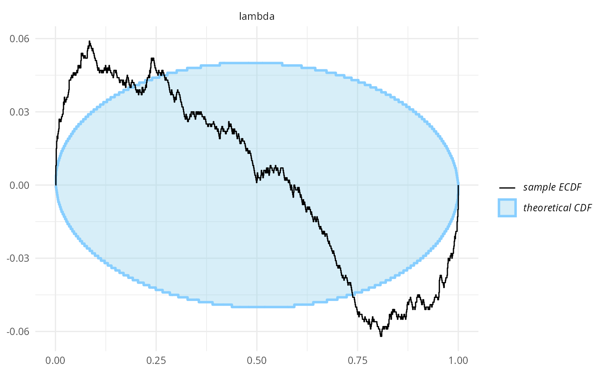
plot_rank_hist(res_poisson_100)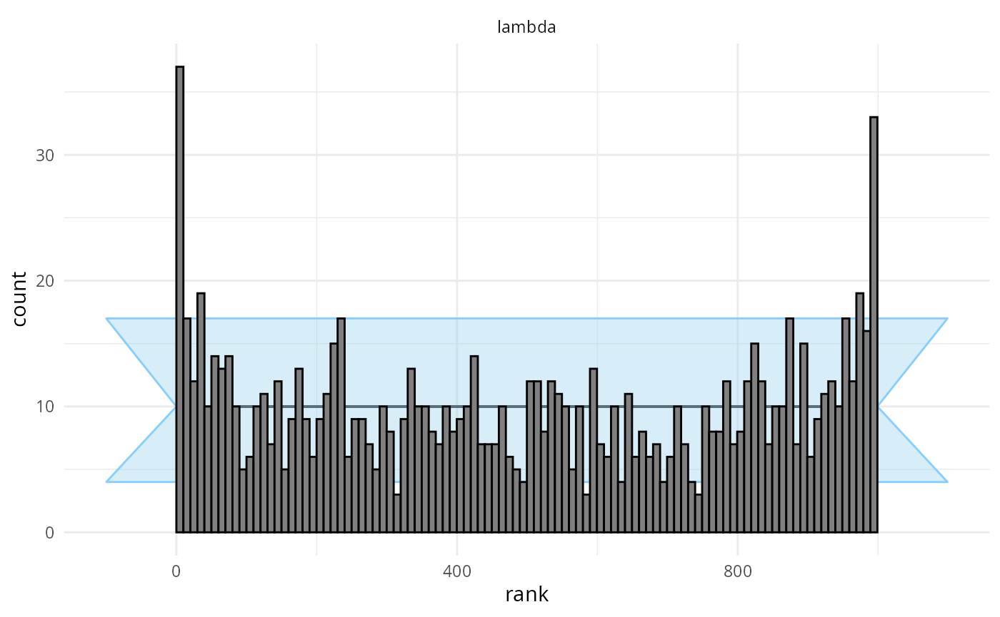
The empirical coverage of the central intervals confirms this:
empirical_coverage(res_poisson_100$stats,width = c(0.95, 0.8, 0.5))## # A tibble: 3 × 6
## variable width width_represented ci_low estimate ci_high
## <chr> <dbl> <dbl> <dbl> <dbl> <dbl>
## 1 lambda 0.5 0.5 0.414 0.445 0.476
## 2 lambda 0.8 0.8 0.682 0.711 0.738
## 3 lambda 0.95 0.95 0.883 0.903 0.920Optimizing
If the model is so simple, maybe a simple Laplace approximation
around the posterior mode would suffice? We can use Stan’s
optimizing mode exactly for that. Although unfortunately,
this is currently implemented only in rstan and not for
cmdstanr (because the underlying CmdStan does not expose
the Hessian of the optimizing fit).
So let us build an optimizing backend
model_poisson_rstan <- stan_model("stan/poisson.stan")
backend_poisson_optimizing <- SBC_backend_rstan_optimizing(model_poisson_rstan)and use it to fit the same datasets - first to the one with
N = 20.
res_poisson_optimizing <-
compute_SBC(ds_poisson, backend_poisson_optimizing, keep_fits = FALSE,
cache_mode = "results", cache_location = file.path(cache_dir, "poisson_opt"))## Results loaded from cache file 'poisson_opt'The resulting ECDF and rank plots are very good.
plot_ecdf_diff(res_poisson_optimizing)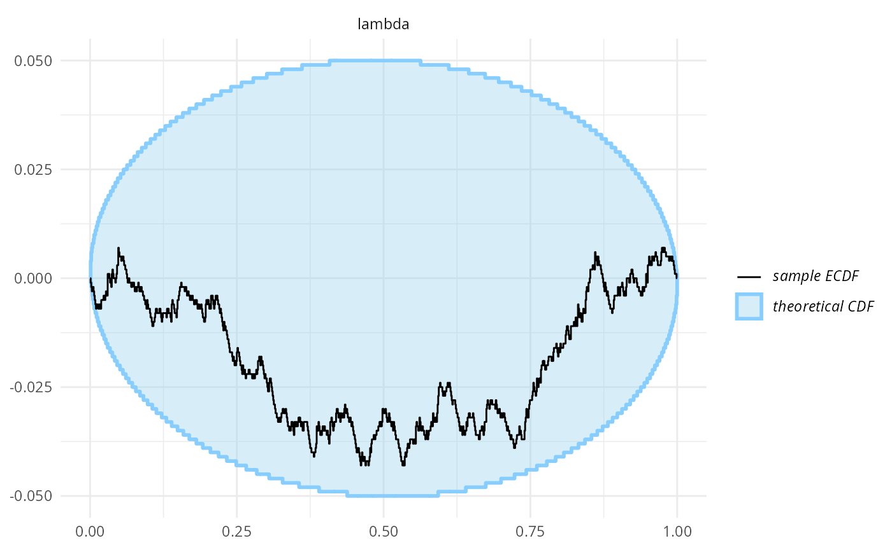
plot_rank_hist(res_poisson_optimizing)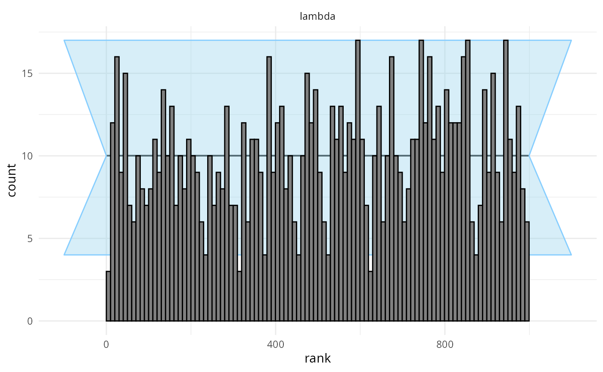
Similarly, we can fit the N = 100 datasets.
res_poisson_optimizing_100 <-
compute_SBC(ds_poisson_100, backend_poisson_optimizing, keep_fits = FALSE,
cache_mode = "results", cache_location = file.path(cache_dir, "poisson_opt_100"))## Results loaded from cache file 'poisson_opt_100'The resulting rank plot once again indicates no serious issues and we thus get better results here than with ADVI.
plot_ecdf_diff(res_poisson_optimizing_100)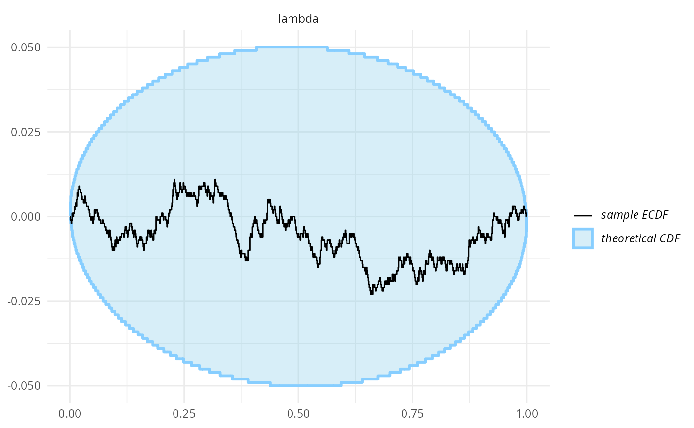
plot_rank_hist(res_poisson_optimizing_100)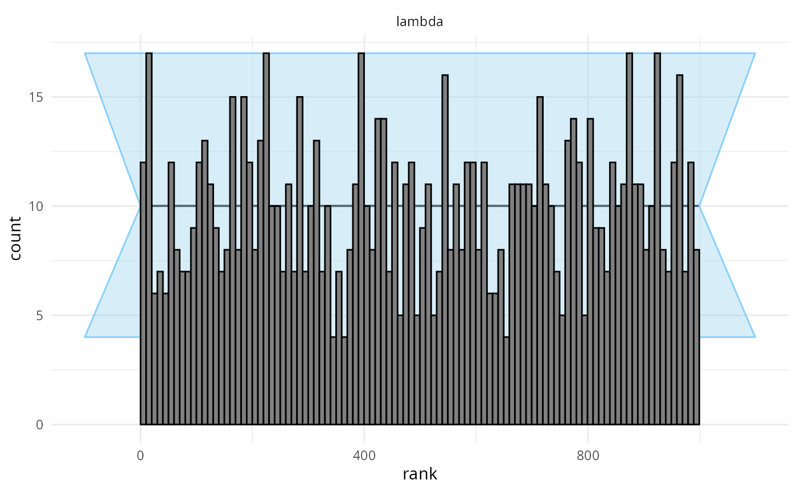
Summary
We see that for simple models ADVI can provide very tight approximation to exact inference, but this cannot be taken for granted. Surprisingly, having more data does not make the ADVI approximation necessarily better. Additionally, for such simple models, a simple Laplace approximation around the posterior mode works better (and likely faster) than ADVI.
Example II - Hidden Markov Model
We’ll jump to a quite more complex model (partially because we wanted to have a HMM example).
In this example, we have collected a set of counts of particles emitted by a specimen in a relatively large number of experimental runs. We however noticed that there is a suspiciously large number of low counts. Inspecting the equipment, it turns out that the experiment was not set up properly and in some of the runs, our detector could only register background noise. We however don’t know which runs were erroneous.
So we assume that some experiments contain both background noise and the signal of interest and the rest contain just the background. For simplicity, we assume a Poisson distribution for the counts.
Additionally, observing background only vs. signal in individual data points is not independent and we want to model how the experimental setup switches between these two states over time. We add additional structure to the model to account for this autocorrelation.
One possible choice for such structure is hidden Markov models (HMMs) where we assume the probability of transitioning from one state to another is identical across all time points. The case study for HMMs has a more thorough discussion and also shows how to code those in Stan.
Maybe the simplest way to describe the model is to show how we simulate the data:
generator_HMM <- function(N) {
mu_background <- rlnorm(1, -2, 1)
mu_signal <- rlnorm(1, 2, 1)
# Draw the transition probabilities
t1 <- MCMCpack::rdirichlet(1, c(3, 3))
t2 <- MCMCpack::rdirichlet(1, c(3, 3))
states = rep(NA_integer_, N)
# Draw from initial state distribution
rho <- MCMCpack::rdirichlet(1, c(1, 10))
# Simulate the hidden states
states[1] = sample(1:2, size = 1, prob = rho)
for(n in 2:length(states)) {
if(states[n - 1] == 1)
states[n] = sample(c(1, 2), size = 1, prob = t1)
else if(states[n - 1] == 2)
states[n] = sample(c(1, 2), size = 1, prob = t2)
}
# Simulate observations given the state
mu <- c(mu_background, mu_background + mu_signal)
y <- rpois(N, mu[states])
list(
variables = list(
mu_background = mu_background,
mu_signal = mu_signal,
# rdirichlet returns matrices, convert to 1D vectors
t1 = as.numeric(t1),
t2 = as.numeric(t2),
rho = as.numeric(rho)
),
generated = list(
N = N,
y = y
)
)
}And here is the Stan code that models this process (it is based on the example from the HMM case study but simplified and modified).
data {
int N; // Number of observations
array[N] int y;
}
parameters {
// Parameters of measurement model
real<lower=0> mu_background;
real<lower=0> mu_signal;
// Initial state
simplex[2] rho;
// Rows of the transition matrix
simplex[2] t1;
simplex[2] t2;
}
model {
matrix[2, 2] Gamma;
matrix[2, N] log_omega;
// Build the transition matrix
Gamma[1, : ] = t1';
Gamma[2, : ] = t2';
// Compute the log likelihoods in each possible state
for (n in 1 : N) {
// The observation model could change with n, or vary in a number of
// different ways (which is why log_omega is passed in as an argument)
log_omega[1, n] = poisson_lpmf(y[n] | mu_background);
log_omega[2, n] = poisson_lpmf(y[n] | mu_background + mu_signal);
}
mu_background ~ lognormal(-2, 1);
mu_signal ~ lognormal(2, 1);
// Initial state - we're quite sure we started with the source working
rho ~ dirichlet([1, 10]);
t1 ~ dirichlet([3, 3]);
t2 ~ dirichlet([3, 3]);
target += hmm_marginal(log_omega, Gamma, rho);
}Default ADVI
We start with the default (meanfield) variational backend via Stan:
if(package_version(cmdstanr::cmdstan_version()) < package_version("2.26.0") ) {
stop("The models int this section require CmdStan 2.26 or later.")
}
model_HMM <- cmdstan_model("stan/hmm_poisson.stan")
backend_HMM <- SBC_backend_cmdstan_variational(model_HMM, n_retries_init = 3)Since we are feeling confident that our model is implemented correctly (and the model runs quickly), we start with 100 simulations and assume 100 observations for each. If you are developing a new model, it might be useful to start with fewer simulations, as discussed in the small model workflow vignette.
And we compute results
set.seed(642354822)
ds_hmm <- generate_datasets(SBC_generator_function(generator_HMM, N = 100), n_sims = 100)
res_hmm <- compute_SBC(ds_hmm, backend_HMM,
cache_mode = "results", cache_location = file.path(cache_dir, "hmm"))## Results loaded from cache file 'hmm'There are not huge problems, but the mu_signal variable
seems to not be well calibrated:
plot_ecdf_diff(res_hmm)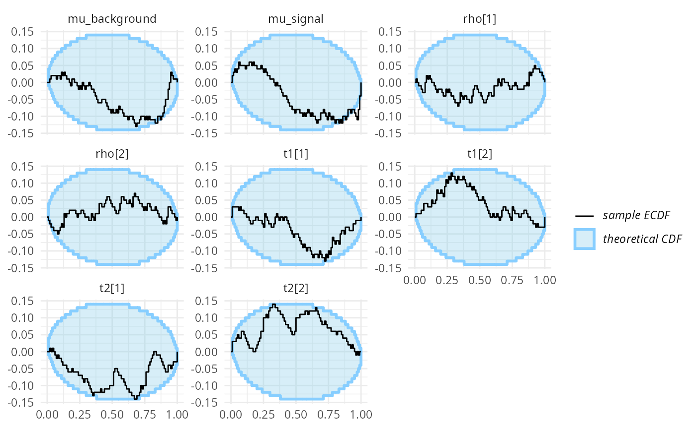
plot_rank_hist(res_hmm)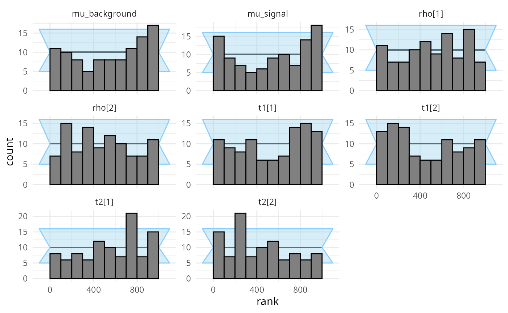
We may also look at the observed coverage of central intervals - we
see that for mu_signal the approximation tends to be
overconfident for the wider intervals.
plot_coverage(res_hmm)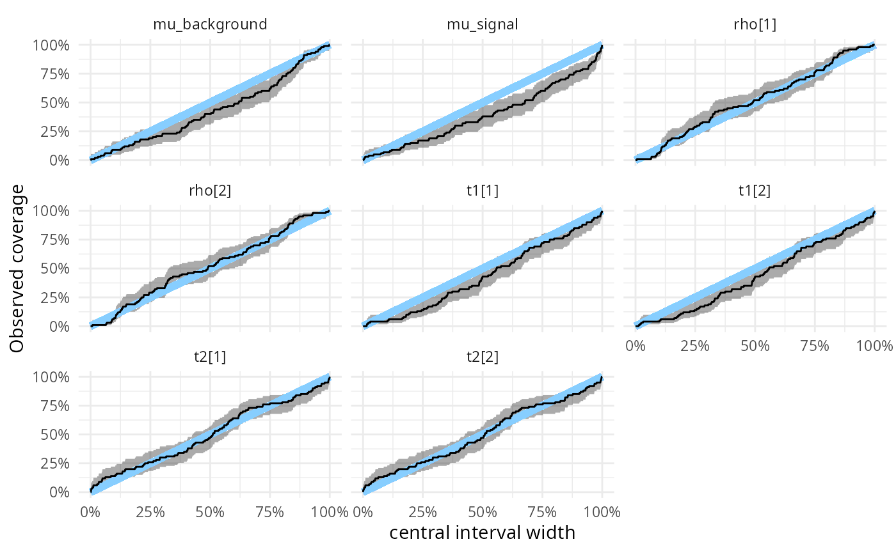
To make sure this is not a fluke we add 400 more simulations.
set.seed(2254355)
ds_hmm_2 <- generate_datasets(SBC_generator_function(generator_HMM, N = 100), n_sims = 400)
res_hmm_2 <- bind_results(
res_hmm,
compute_SBC(ds_hmm_2,backend_HMM,
cache_mode = "results",
cache_location = file.path(cache_dir, "hmm2"))
)## Results loaded from cache file 'hmm2'This confirms the problems with mu_signal. additionally,
we see that mu_background and the rho
variables also show some irregularities.
plot_ecdf_diff(res_hmm_2)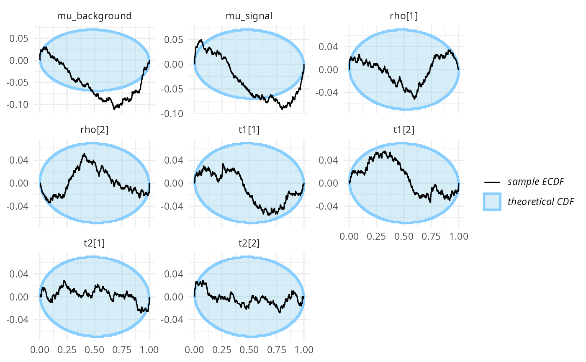
plot_rank_hist(res_hmm_2)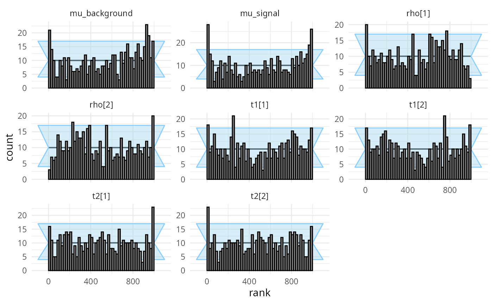
Looking at the observed coverage, both mu_background and
mu_signal are now clearly somewhat overconfident for the
wider intervals.
plot_coverage(res_hmm_2)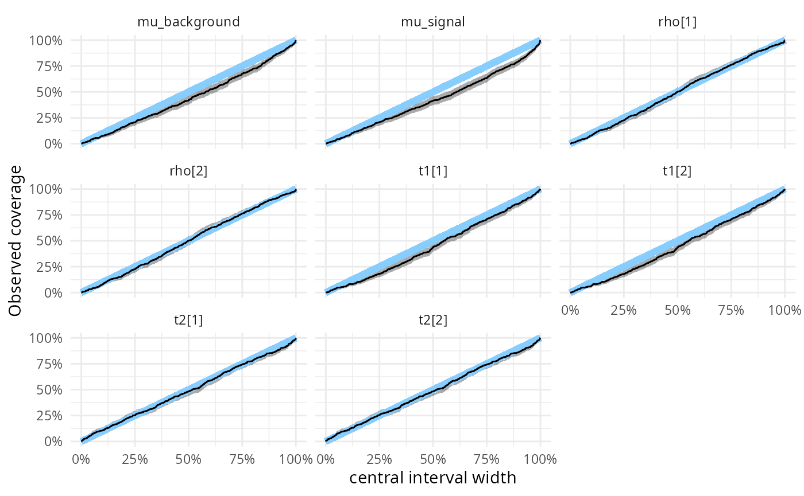
This is what we get when we focus on the 90% posterior credible interval:
coverage_hmm <- empirical_coverage(res_hmm_2$stats, width = 0.9)[, c("variable", "ci_low", "ci_high")]
coverage_hmm## # A tibble: 8 × 3
## variable ci_low ci_high
## <chr> <dbl> <dbl>
## 1 mu_background 0.818 0.880
## 2 mu_signal 0.752 0.823
## 3 rho[1] 0.860 0.914
## 4 rho[2] 0.860 0.914
## 5 t1[1] 0.814 0.877
## 6 t1[2] 0.814 0.877
## 7 t2[1] 0.835 0.895
## 8 t2[2] 0.835 0.895So the 90% central credible interval for mu_signal
likely contains less than 82% of true values.
For a crude result, the default ADVI setup we just tested is not terrible: we don’t expect to see a strong bias and the model will be somewhat overconfident, but not catastrophically so.
Note that when the user is aiming for a point estimate of mean or other central tendency, a summary of VI posterior may provide a good point estimate even when the uncertainty is miscalibrated. VSBC, a diagnostic that concentrates on bias in marginal quantity, was developed to test this (Yao et. al., 2018), but is currently not implemented in our package (see https://github.com/hyunjimoon/SBC/issues/60 for progress). Other diagnostic such as PSIS-based which is associated with specific data and test quantity, is less flexible for target-testing.
Full-rank
We may try if the situation improves with full-rank ADVI - let’s run it for the same datasets.
ds_hmm_all <- bind_datasets(ds_hmm, ds_hmm_2)
res_hmm_fullrank <- compute_SBC(
ds_hmm_all,
SBC_backend_cmdstan_variational(model_HMM, algorithm = "fullrank", n_retries_init = 3),
cache_mode = "results", cache_location = file.path(cache_dir, "hmm_fullrank"))## Results loaded from cache file 'hmm_fullrank'We still have problems, but different ones (and arguably somewhat less severe):
plot_ecdf_diff(res_hmm_fullrank)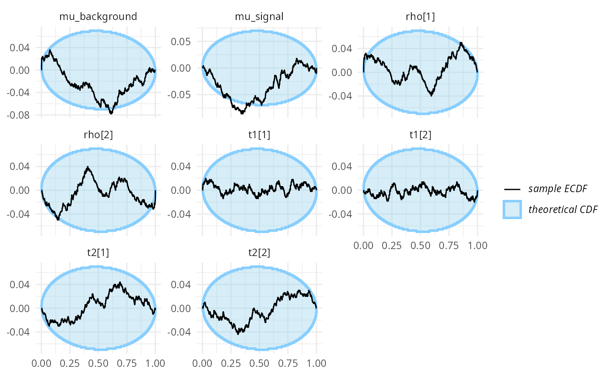
plot_rank_hist(res_hmm_fullrank)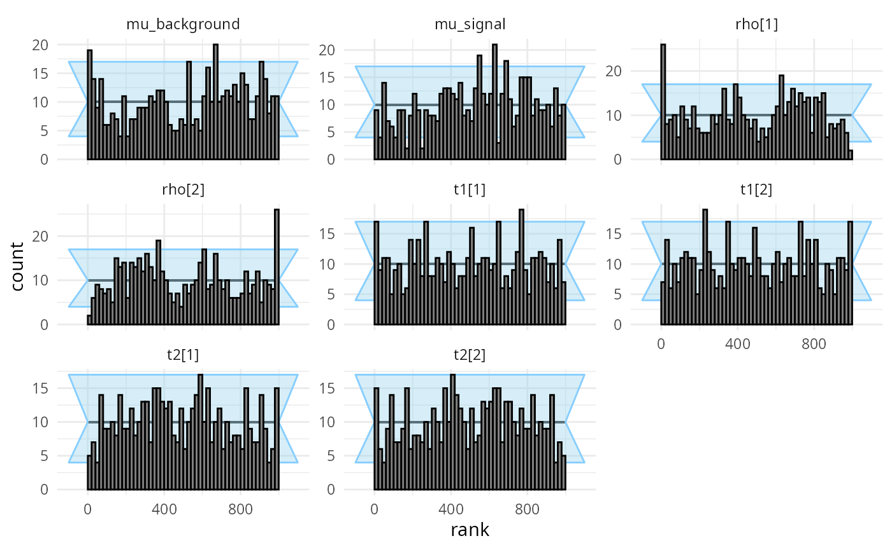
Interestingly, the rank plot for mu_signal shows a
“frowning” shape, meaning the mean-field approximation is slightly
underconfident here.
This is nicely demonstrated by looking at the central interval
coverage - now the coverage of mu_signal is larger
than it should be, so the model is underconfident (i.e. more
conservative), while the coverages for other variables track the nominal
values quite closely.
plot_coverage(res_hmm_fullrank)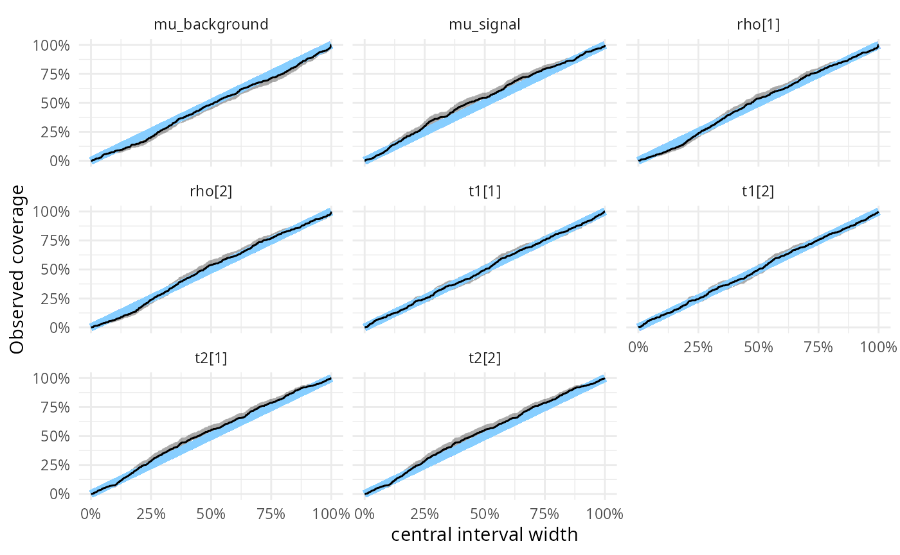
Or alternatively looking at the numerical values for coverage of the central 90% interval
coverage_hmm_fullrank <-
empirical_coverage(res_hmm_fullrank$stats, width = 0.9)[, c("variable", "ci_low", "ci_high")]
coverage_hmm_fullrank## # A tibble: 8 × 3
## variable ci_low ci_high
## <chr> <dbl> <dbl>
## 1 mu_background 0.849 0.906
## 2 mu_signal 0.893 0.941
## 3 rho[1] 0.873 0.925
## 4 rho[2] 0.873 0.925
## 5 t1[1] 0.866 0.920
## 6 t1[2] 0.866 0.920
## 7 t2[1] 0.877 0.929
## 8 t2[2] 0.877 0.929This pattern where the default meanfield approximation is overconfident and the fullrank approximation is underconfident is in fact quite frequently seen, which motivated some experiments with a low rank approximation that would fall in between those, but as of early 2022 this is not ready for use in Stan.
Meanfield + lower tolerance
In some cases, it might also help to reduce the tolerance
(tol_rel_obj) of the algorithm. This is a restriction on
evidence lower bound (ELBO) for tighter optimization convergence. Here
we’ll use the default mean-field algorithm, but decrease the
tol_rel_obj (the default value is 0.01). So let’s try
that.
res_hmm_lowtol <- compute_SBC(
ds_hmm_all,
SBC_backend_cmdstan_variational(model_HMM, tol_rel_obj = 0.001, n_retries_init = 3),
cache_mode = "results", cache_location = file.path(cache_dir, "hmm_lowtol"))## Results loaded from cache file 'hmm_lowtol'## - 14 (3%) of fits did not converge.## Not all diagnostics are OK.
## You can learn more by inspecting $default_diagnostics, $backend_diagnostics
## and/or investigating $outputs/$messages/$warnings for detailed output from the backend.Reducing tolerance leads to a small proportion of non-converging
fits. In theory, increasing grad_samples improve
non-convergence but in our experience, current ADVI (2021) convergence
does not easily change with this adjustment. Also, since the
non-converged cases are relatively rare, we’ll just remove the
non-converging fits from the SBC results (this is OK as long as we would
discard non-converging fits for real data, see the rejection
sampling vignette).
res_hmm_lowtol_conv <-
res_hmm_lowtol[res_hmm_lowtol$backend_diagnostics$elbo_converged]
plot_ecdf_diff(res_hmm_lowtol_conv)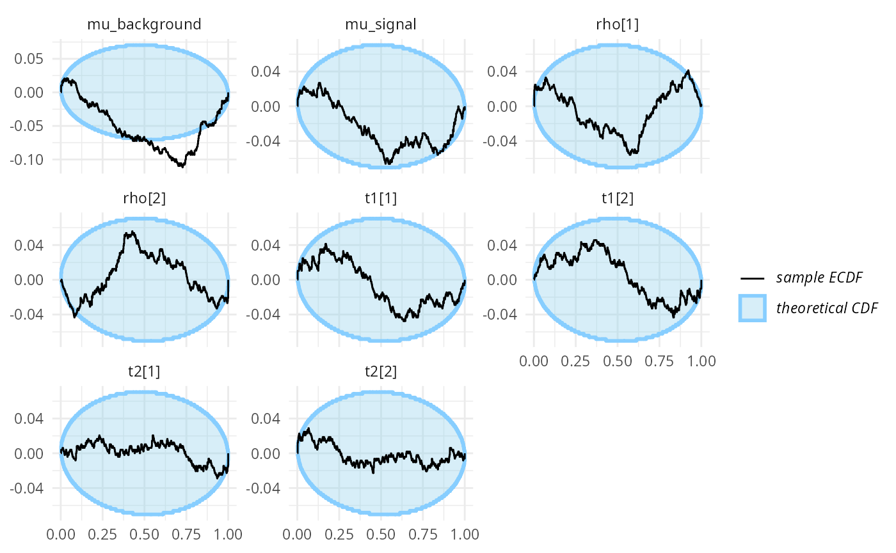
plot_rank_hist(res_hmm_lowtol_conv)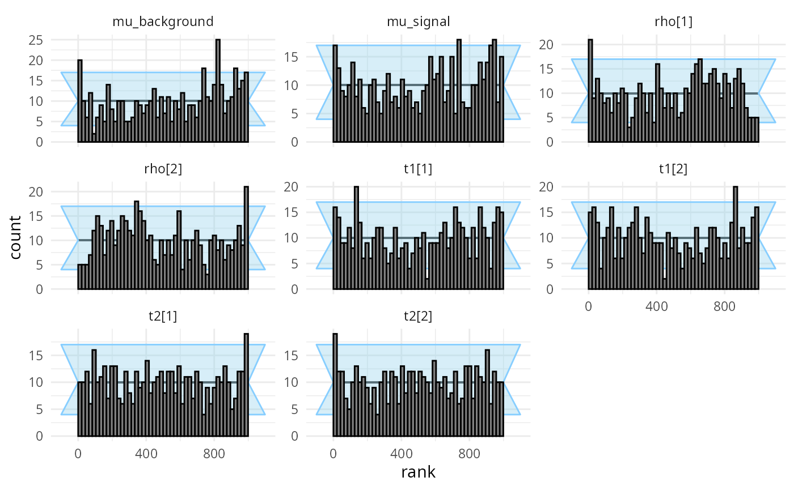
The problems seem to have become even less pronounced. We may once again inspect the observed coverage of central intervals
plot_coverage(res_hmm_lowtol_conv)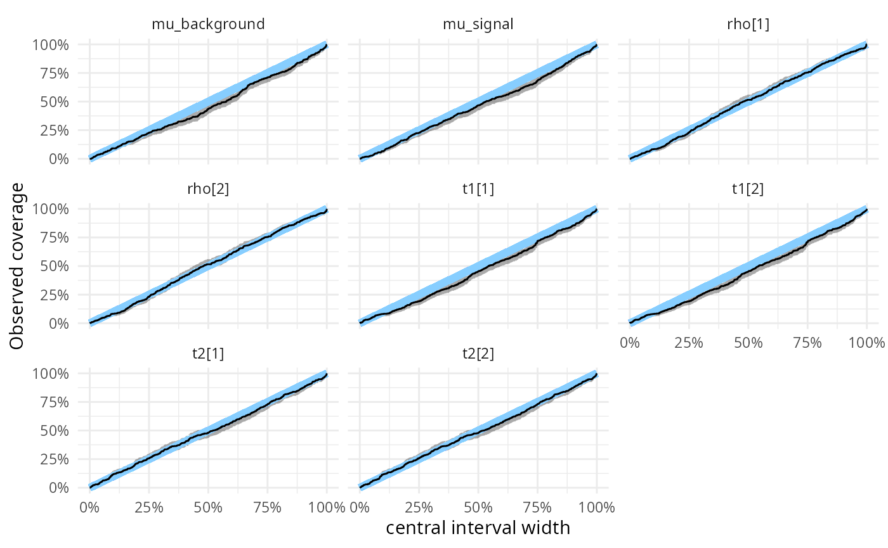
and the numerical values for the coverage of the central 90% interval.
empirical_coverage(res_hmm_lowtol$stats, width = 0.9)[, c("variable", "ci_low", "ci_high")]## # A tibble: 8 × 3
## variable ci_low ci_high
## <chr> <dbl> <dbl>
## 1 mu_background 0.827 0.888
## 2 mu_signal 0.835 0.895
## 3 rho[1] 0.879 0.930
## 4 rho[2] 0.879 0.930
## 5 t1[1] 0.814 0.877
## 6 t1[2] 0.814 0.877
## 7 t2[1] 0.844 0.902
## 8 t2[2] 0.844 0.902This variant has somewhat lower overall mismatch, but tends to be overconfident, which might in some cases be less desirable than the more conservative fullrank.
Optimizing
Would optimizing provide sensible results in this case? We build an optimizng backend and run it.
SBC:::require_package_version("rstan", "2.26", "The models in the following sections need more recent rstan than what is available on CRAN - use https://mc-stan.org/r-packages/ to get it")
model_HMM_rstan <- stan_model("stan/hmm_poisson.stan")
res_hmm_optimizing <- compute_SBC(
ds_hmm_all,
SBC_backend_rstan_optimizing(model_HMM_rstan, n_retries_hessian = 3),
cache_mode = "results", cache_location = file.path(cache_dir, "hmm_optimizing"))## Results loaded from cache file 'hmm_optimizing'## - 1 (0%) of fits required multiple attempts to produce usable Hessian.## Not all diagnostics are OK.
## You can learn more by inspecting $default_diagnostics, $backend_diagnostics
## and/or investigating $outputs/$messages/$warnings for detailed output from the backend.We see that while for some variables (mu_signal, the
transition probabilities t[]), the Laplace approximation is
reasonably well calibrated, it is very badly calibrated with respect to
the initial states rho and also for
mu_background, where there is substantial bias. So if we
were only interested in a subset of the variables, the optimizing fit
could still be on OK choice.
plot_ecdf_diff(res_hmm_optimizing)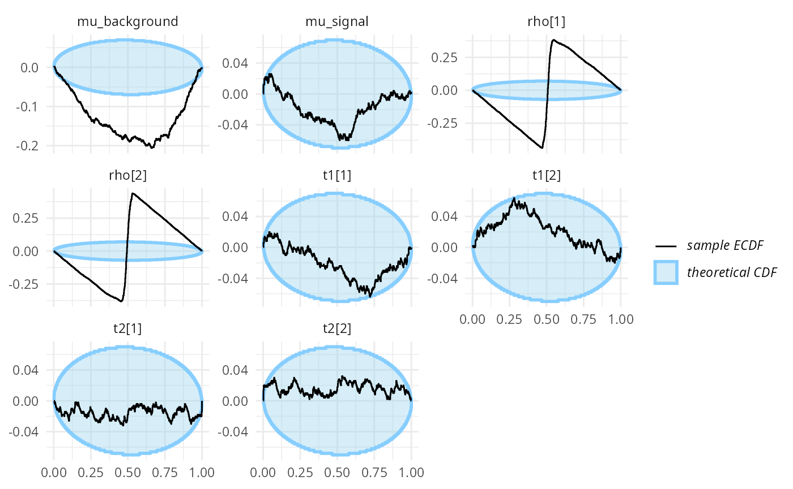
plot_rank_hist(res_hmm_optimizing)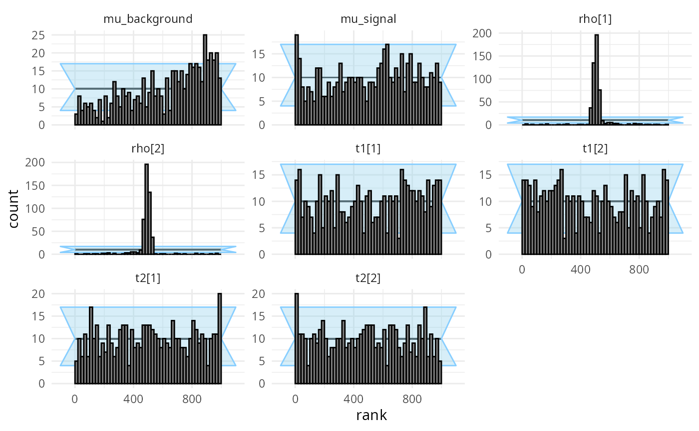
Summary
To summarise, the HMM model turns out to pose minor problems for ADVI that can be partially resolved by tweaking the parameters of the ADVI algorithm. Just using optimizing results in much worse calibration than ADVI.
Another relevant question is how much speed we gained. To have a comparison, we run full MCMC with Stan for the same datasets.
res_hmm_sample <- compute_SBC(
ds_hmm[1:50],
SBC_backend_cmdstan_sample(model_HMM),
keep_fits = FALSE,
cache_mode = "results", cache_location = file.path(cache_dir, "hmm_sample"))## Results loaded from cache file 'hmm_sample'## - 2 (4%) fits had divergent transitions. Maximum number of divergences was 70.## Not all diagnostics are OK.
## You can learn more by inspecting $default_diagnostics, $backend_diagnostics
## and/or investigating $outputs/$messages/$warnings for detailed output from the backend.We get a small number of problematic fits, which we will ignore for now. We check that there are no obvious calibration problems:
plot_ecdf_diff(res_hmm_sample)
plot_rank_hist(res_hmm_sample)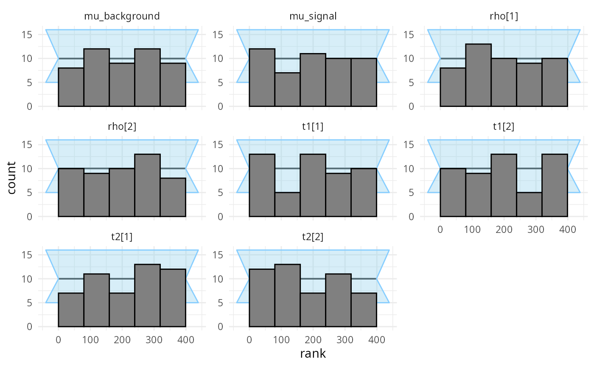
For the machine we built the vignette on, here are the distributions of times (for ADVI and optimizing) and time of longest chain (for HMC):
hmm_time <-
rbind(
data.frame(alg = "Optimizing",
time = res_hmm_optimizing$backend_diagnostics$time),
data.frame(alg = "Meanfield",
time = res_hmm$backend_diagnostics$time),
data.frame(alg = "Fullrank",
time = res_hmm_fullrank$backend_diagnostics$time),
data.frame(alg = "Meanfield + low tol.",
time = res_hmm_lowtol$backend_diagnostics$time),
data.frame(alg = "Sampling (longest chain)",
time = res_hmm_sample$backend_diagnostics$max_chain_time))
max_time_optimizing <- round(max(res_hmm_optimizing$backend_diagnostics$time), 2)
hmm_time$alg <- factor(hmm_time$alg,
levels = c("Optimizing",
"Meanfield",
"Fullrank",
"Meanfield + low tol.",
"Sampling (longest chain)"))
ggplot(hmm_time, aes(x = time)) +
geom_histogram(aes(y = ..density..), bins = 20) +
facet_wrap(~alg, ncol = 1) +
scale_x_continuous("Time [seconds]")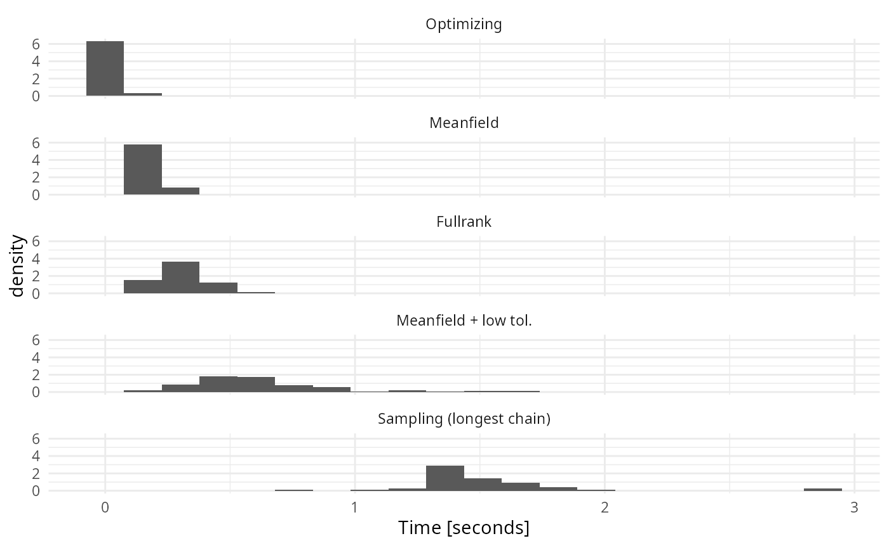
Depressingly, while using lower tolerance let us get almost as good uncertainty quantification as sampling, it also erased a big part of the performance advantage variational inference had over sampling for this model. However, both the fullrank and meanfield approximations provide not-terrible estimates and are noticeably faster than sampling. Optimizing is by far the fastest as the longest time observed is just 0.16 seconds.
Example III - Hidden Markov Model, ordered variant
Unforutnately, ADVI as implemented in Stan can be quite fragile. Let
us consider a very small change to the HMM model from the previous
section: let us model the means of the counts for the two states
directly (the previous version modelled the background state and the
difference between the two states) and move to the log scale. So instead
of mu_background and mu_signal we have an
ordered vector log_mu:
data {
int N; // Number of observations
array[N] int y;
}
parameters {
// Parameters of measurement model
ordered[2] log_mu;
// Initial state
simplex[2] rho;
// Rows of the transition matrix
simplex[2] t1;
simplex[2] t2;
}
model {
matrix[2, 2] Gamma;
matrix[2, N] log_omega;
// Build the transition matrix
Gamma[1, : ] = t1';
Gamma[2, : ] = t2';
// Compute the log likelihoods in each possible state
for (n in 1 : N) {
// The observation model could change with n, or vary in a number of
// different ways (which is why log_omega is passed in as an argument)
log_omega[1, n] = poisson_log_lpmf(y[n] | log_mu[1]);
log_omega[2, n] = poisson_log_lpmf(y[n] | log_mu[2]);
}
log_mu[1] ~ normal(-2, 1);
log_mu[2] ~ normal(2, 1);
// Initial state - we're quite sure we started with the source working
rho ~ dirichlet([1, 10]);
t1 ~ dirichlet([3, 3]);
t2 ~ dirichlet([3, 3]);
target += hmm_marginal(log_omega, Gamma, rho);
}
generated quantities {
positive_ordered[2] mu = exp(log_mu);
}This model is almost identical - in theory the only difference is that it implies a slightly different prior on the active (higher mean) state. Here is how we can generate data with this mildly different prior (we need rejection sampling to fulfill the ordering constraint):
generator_HMM_ordered <- function(N) {
# Rejection sampling for ordered mu with the correct priors
repeat {
log_mu <- c(rnorm(1, -2, 1), rnorm(1, 2, 1))
if(log_mu[1] < log_mu[2]) {
break;
}
}
mu <- exp(log_mu)
# Draw the transition probabilities
t1 <- MCMCpack::rdirichlet(1, c(3, 3))
t2 <- MCMCpack::rdirichlet(1, c(3, 3))
states = rep(NA_integer_, N)
# Draw from initial state distribution
rho <- MCMCpack::rdirichlet(1, c(1, 10))
states[1] = sample(1:2, size = 1, prob = rho)
for(n in 2:length(states)) {
if(states[n - 1] == 1)
states[n] = sample(c(1, 2), size = 1, prob = t1)
else if(states[n - 1] == 2)
states[n] = sample(c(1, 2), size = 1, prob = t2)
}
y <- rpois(N, mu[states])
list(
variables = list(
log_mu = log_mu,
# rdirichlet returns matrices, convert to 1D vectors
t1 = as.numeric(t1),
t2 = as.numeric(t2),
rho = as.numeric(rho)
),
generated = list(
N = N,
y = y
)
)
}So let us build a default variational backend and fit it to just 20 simulations.
model_HMM_ordered <- cmdstan_model("stan/hmm_poisson_ordered.stan")
backend_HMM_ordered <- SBC_backend_cmdstan_variational(model_HMM_ordered, n_retries_init = 3)
set.seed(12333654)
ds_hmm_ordered <- generate_datasets(
SBC_generator_function(generator_HMM_ordered, N = 100),
n_sims = 20)
res_hmm_ordered <-
compute_SBC(ds_hmm_ordered, backend_HMM_ordered,
cache_mode = "results", cache_location = file.path(cache_dir, "hmm_ordered"))## Results loaded from cache file 'hmm_ordered'Immediately we see that the log_mu[1] variable is
heavily miscalibrated.
plot_ecdf_diff(res_hmm_ordered)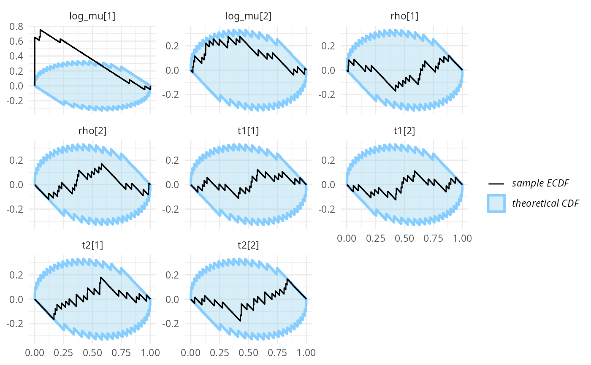
plot_rank_hist(res_hmm_ordered)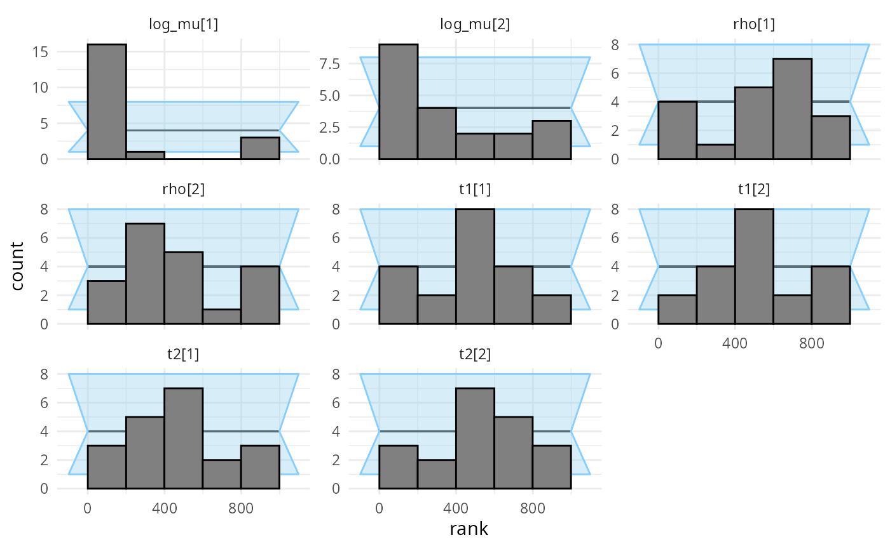
What changed? To understand that we need to remember how Stan represents
constrained data types. In short, in the model in Example II, Stan
will internally work with the so called unconstrained
parameters mu_background__ = log(mu_background) and
mu_signal__ = log(mu_signal). In this modified model, the
internal representation will be: log_mu_1__ = log_mu[1]
(without any change) and
log_mu_2__ = log(log_mu[2] - log_mu[1]). So the mean for
the active component is actually
exp(log_mu_1__ + exp(log_mu_2__)). This then introduces a
complex correlation structure between the unconstrained parameters that
the ADVI algorithm is unable to handle well.
Even trying the fullrank variant does not help:
backend_HMM_ordered_fullrank <-
SBC_backend_cmdstan_variational(model_HMM_ordered,
algorithm = "fullrank", n_retries_init = 3)
res_hmm_ordered_fullrank <-
compute_SBC(ds_hmm_ordered, backend_HMM_ordered,
cache_mode = "results", cache_location = file.path(cache_dir, "hmm_ordered_fullrank"))## Results loaded from cache file 'hmm_ordered_fullrank'The results are still strongly miscalibrated.
plot_ecdf_diff(res_hmm_ordered_fullrank)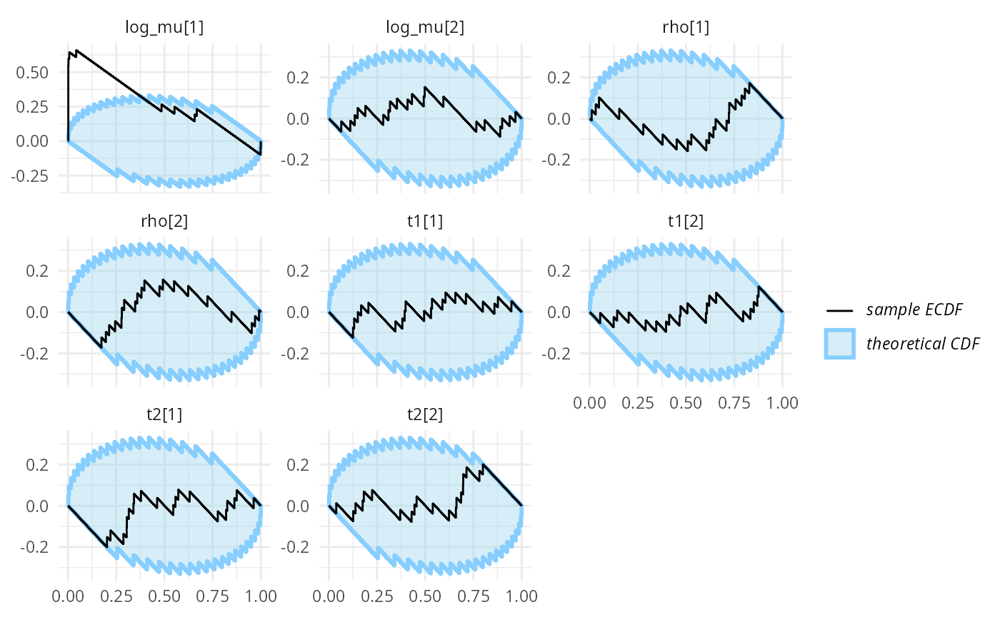
plot_rank_hist(res_hmm_ordered_fullrank)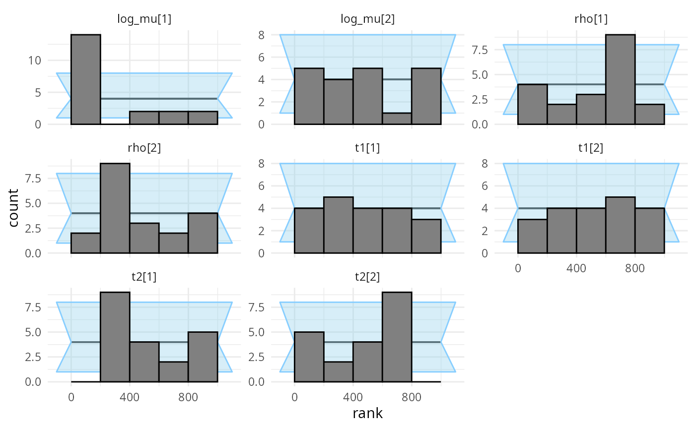
To have a complete overview we may also try the optimizing fit:
model_HMM_ordered_rstan <- stan_model("stan/hmm_poisson_ordered.stan")
res_hmm_ordered_optimizing <- compute_SBC(
ds_hmm_ordered,
SBC_backend_rstan_optimizing(model_HMM_ordered_rstan),
cache_mode = "results", cache_location = file.path(cache_dir, "hmm_ordered_optimizing"))## Results loaded from cache file 'hmm_ordered_optimizing'in this case, optimizing has better calibration for
log_mu, but worse calibration for rho than
ADVI.
plot_ecdf_diff(res_hmm_ordered_optimizing)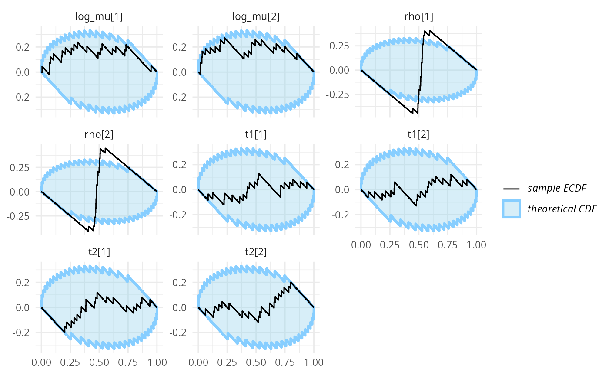
plot_rank_hist(res_hmm_ordered_optimizing)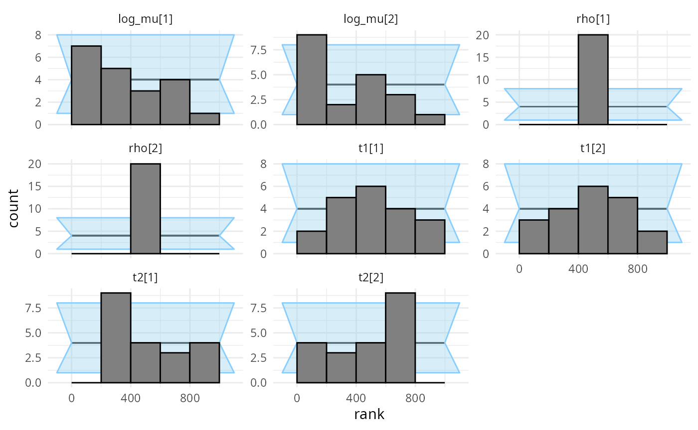
Conclusion
As this vignette has shown, for some models, ADVI will provide results that are close to what we get with sampling, but it may also fail catastrophically on models that are just slightly different. Tweaking the algorithm parameters might also be necessary. For some cases where ADVI works, the Laplace approximation with optimizing will also work well. ADVI (and optimizng) cannot thus be used blindly. Fortunately SBC can be used to check against this type of problem without ever needing to run the full sampling.
Next step: Evolving computation and diagnostic.
In computational_algorithm2, we will focus on hopeful aspects of approximate computation. The adversarial relation between computation and diagnostic is introduced based on which mutual evolvement happens. This can give insight to computational algorithm designers aiming to pass SBC. For illustration, when and how VI can be used is discussed which include customized SBC (e.g. VSBC) and first or second-order correction.
References
- Zhang et. al. (2021) Pathfinder: Parallel quasi-Newton variational inference https://arxiv.org/abs/2108.03782
- Turner and Sahani (2010) Two problems with variational expectation maximisation for time-series models http://www.gatsby.ucl.ac.uk/~maneesh/papers/turner-sahani-2010-ildn.pdf
- Yao et. al. (2018) Yes, but Did It Work?: Evaluating Variational Inference http://proceedings.mlr.press/v80/yao18a/yao18a.pdf